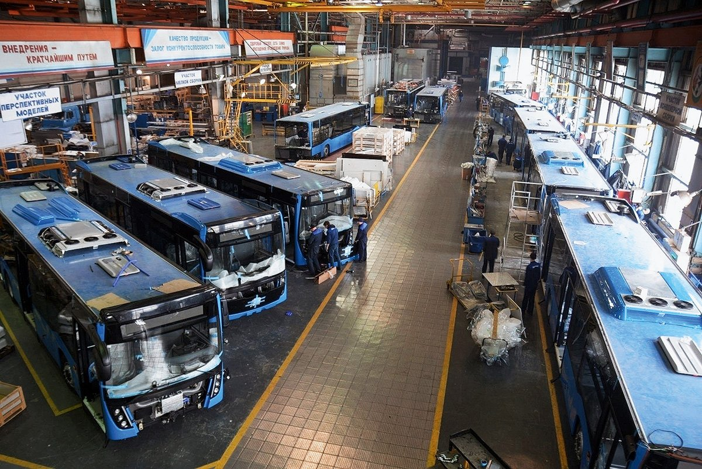

О КОМПАНИИ
Публичное акционерное общество «НЕФАЗ» входит в группу предприятий ПАО «КАМАЗ» и является крупнейшим в России заводом по производству спецнадстроек на шасси КАМАЗ. Производственные площади предприятия расположены в г. Нефтекамск (Республика Башкортостан).
В числе крупнейших акционеров ПАО «НЕФАЗ»: ПАО «КАМАЗ» (50,02% доля в уставном капитале), Республика Башкортостан (28,50%).
Завод производит:
- специальные надстройки на шасси автомобилей
- пассажирские и вахтовые автобусы, электробусы, троллейбусы,
- емкостно-наливную технику
- бортовые прицепы и полуприцепы
- запасные части
.webp)
Миссия и ценности
Миссия: Производство качественной, надёжной и инновационной техники для развития транспортной инфраструктуры России и стран СНГ.
Ценности: надёжность, инновации, устойчивое развитие, социальная ответственность.
Ключевые цифры:
- 45+ лет на рынке
- 1500+ сотрудников
- 100 000+ единиц техники выпущено
- 20+ стран экспортирования
ОСНОВАТЕЛИ
Завод основан в рамках постановления Совета Министров СССР в 1970 году.
В развитие проекта активно участвовали:
- КАМАЗ — инициатор проекта и основной акционер.
- Совет Министров СССР — постановление №1042 от 1970 года.
- Министерство автопрома СССР — заказчик по проекту.
ИСТОРИЧЕСКАЯ СПРАВКА
Публичное акционерное общество «НЕФАЗ» отсчитывает свой возраст с осени 1977 года - с момента пуска главного конвейера. Однако история рождения предприятия начинается гораздо раньше.
17 декабря 1970 года Совет Министров СССР издал Постановление «О строительстве и реконструкции заводов Министерства автомобильной промышленности для обеспечения Камского автомобильного завода запасными частями и комплектующими деталями». Как известно, в те годы КАМАЗ - автогигант в городе Набережные Челны - был объявлен Всесоюзной ударной стройкой. Было решено строить и заводы-спутники, которые бы поставляли туда необходимую комплектацию.
25 декабря 1970 года Государственный Комитет Совета Министров по делам строительства издал приказ №65 «О создании завода по производству автосамосвалов и лебёдок» в городе Нефтекамске Башкирской АССР. Подобный же приказ №4 от 8 января 1971 года издал Министр автомобильной промышленности СССР.